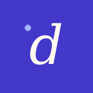
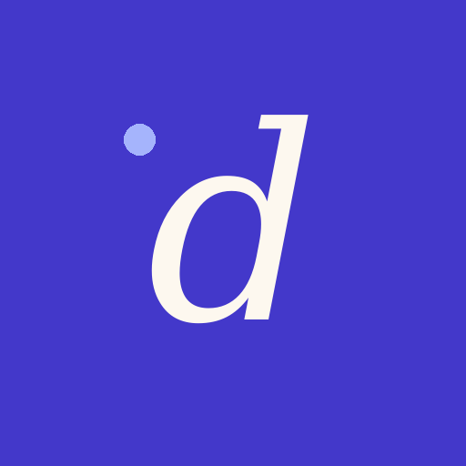

Dispatch already has a look: a cool grey ground with two faint washes, white cards with 12px corners, one indigo, condensed capitals for the wordmark and names, JetBrains Mono for the dispatch blocks and status lines, and green, amber and red only for status. This guide names it so the app and the GitLab repo stay the same product. It invents nothing.
Every colour below is a token in src/styles/tokens.css at v3.1.1. The app has light, dark and auto themes; both palettes are listed. The headline is the README's own line: Paste the list once: Dispatch picks out your vehicles, assigns the time slots, keeps a countdown for each one.
The icon is a cream italic serif d with a small periwinkle dot to its upper left, on full-bleed indigo. In the app there is no image: the header sets a 6px indigo dot before the word. The dot is what the two share.

Three colours, sampled from the PNG: indigo ground #4338CA (the light theme's --accent), a cream letter #FDF8EF, and a periwinkle dot #A5B4FC (the dark theme's --accent). So the icon carries both themes' accent. The cream is not a token.
icon-192.png is the favicon and the apple-touch-icon. The manifest lists 192 and 512 as any, and the same icon-512.png again as maskable. The README opens with icon-512 at 88px. The header uses the dot and the word, never the icon.
The markup says dispatch; CSS sets it in Big Shoulders Display 700 at 22px, uppercase, tracking +1%, after a 6px accent dot, with the version beside it (v3.1.1 here). Light theme left, dark right: the dot follows --accent, indigo or periwinkle. The name is Dispatch in the page title, README and on the home screen; the manifest's long name is Dispatch Formatter; the repo and address say dispatchsaf.
Grey and white do the work, with a faint indigo wash at the top left of the page and a fainter amber one at the bottom right. Indigo is the accent: the primary button, the active tab, the dot, the running badge. Green, amber and red mean status only: complete, pending or warning, error.
--bg#f3f4f6--bg-2#ffffff--bg-3#e9ebf0--ink#1a1d29--ink-2#2d3142--ink-dim#565c6b--ink-faint#676d7c--line#dfe2e8--line-2#c9ced8--accent#4338ca--accent-2#6366f1--accent-light#e0e7ff--ok#059669--warn#d97706--err#dc2626--bg#0f1117--bg-2#171a23--bg-3#1e222e--ink#e8eaed--line#272b38--accent#a5b4fc--ok#34d399--warn#fbbf24--err#f87171Picked in Settings: light, dark or auto.
icon-512.png#fdf8efEvery status pairs its colour with words (READY, NO MATCH) so the colour is never the only signal.
Three faces from Google Fonts, each with one job. Big Shoulders Display (700, 800) for the wordmark, names and titles. Public Sans (400 to 700) for the interface at a 14px base. JetBrains Mono (400 to 700) for the dispatch blocks, status lines, counts and small labels, which are uppercase with +8% tracking.
Three things the app already draws. Use them, not illustration.
A 7px dot and a mono capital label on the output bar, with the count on the right. The words are the app's own.
Small mono counts on the tab bar: indigo while a countdown runs, amber when pending, green when complete.
A white card with a 12px corner, a mono label and a condensed name. The chevron nudges right when pressed.
From the README and the copy already in the app.
Every file the brand lives in today. Nothing on this page is new artwork.
public/icon-512.png | App icon: manifest any and maskable; the README's header image |
public/icon-192.png | Favicon, apple-touch-icon, manifest any |
public/manifest.json | Names (Dispatch Formatter / Dispatch), indigo theme colour, grey background |
index.html (.brand) | The header wordmark: dot, word, version |
src/styles/tokens.css | Fonts, easing and every colour token, both themes |
docs/screenshots/ | README images, made-up data |
Things this guide found and did not change.
theme_color is indigo (#4338ca), while index.html sets theme-color to the grey ground (#f3f4f6), so the installed app's title bar and the browser's differ.og: tags, so a shared link unfurls without an image.Copied from the repo as it is, so this page and the app can't drift.
:root {
/* Fonts */
--sans: 'Public Sans', -apple-system, 'Segoe UI', sans-serif;
--mono: 'JetBrains Mono', ui-monospace, monospace;
--display: 'Big Shoulders Display', 'Public Sans', sans-serif;
/* Easing curves */
--ease-out: cubic-bezier(0.23, 1, 0.32, 1);
--ease-out-strong: cubic-bezier(0.22, 0.61, 0.36, 1);
--ease-snappy: cubic-bezier(0.4, 0, 0.2, 1);
}
:root,
[data-theme='light'] {
--bg: #f3f4f6;
--bg-2: #ffffff;
--bg-3: #e9ebf0;
--ink: #1a1d29;
--ink-2: #2d3142;
--ink-dim: #565c6b;
--ink-faint: #676d7c;
--line: #dfe2e8;
--line-2: #c9ced8;
--accent: #4338ca;
--accent-2: #6366f1;
--accent-light: #e0e7ff;
--warn: #d97706;
--warn-bg: #fef3c7;
--err: #dc2626;
--err-bg: #fee2e2;
--ok: #059669;
--ok-bg: #d1fae5;
--overlay: rgba(26, 29, 41, 0.55);
}.brand {
display: flex;
align-items: baseline;
gap: 8px;
}
.brand-title {
font-family: var(--display);
font-weight: 700;
font-size: 22px;
letter-spacing: 0.01em;
text-transform: uppercase;
color: var(--ink);
}
.brand-dot {
width: 6px;
height: 6px;
background: var(--accent);
border-radius: 50%;
margin-right: 2px;
}<title>Dispatch</title>
<meta name="theme-color" content="#f3f4f6">
<link rel="icon" type="image/png" href="/icon-192.png">
<link rel="apple-touch-icon" href="/icon-192.png">
<link href="https://fonts.googleapis.com/css2?family=Big+Shoulders+Display:wght@700;800&family=JetBrains+Mono:wght@400;500;600;700&family=Public+Sans:wght@400;500;600;700&display=swap" rel="stylesheet">
<div class="brand">
<span class="brand-dot" aria-hidden="true"></span>
<h1 class="brand-title">dispatch</h1><span class="brand-version" id="brandVersion"></span>